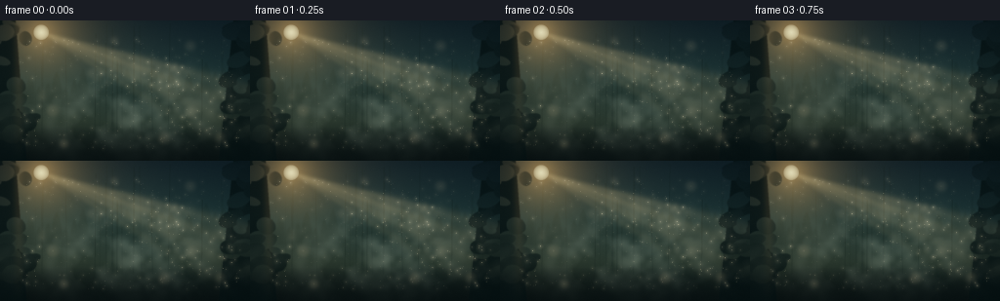
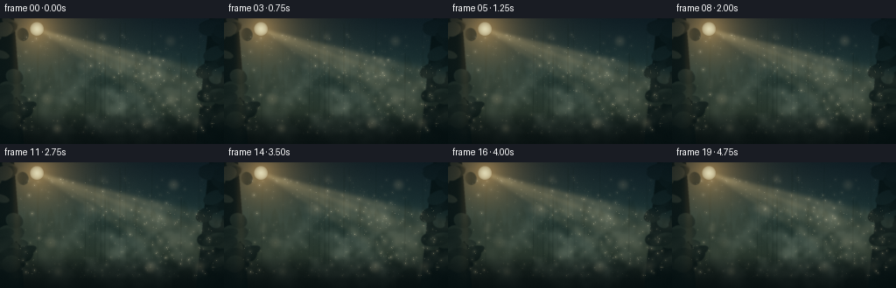

CODING AGENTS AS PIXEL WORLD MODELS
traex/GPT-5.6-Sol · phygen_079
点击播放 · 原生 RGB 像素
逐轮保存的候选
回放视频、检查图与代码变化。
每份候选均可单独播放。实际图片检查记录在下方工具轨迹中。
候选 01播放与检查图
点击播放 · 原生 RGB 像素


展开代码变化
--- 上一保存版本
+++ 本次保存版本
@@ -0,0 +1,216 @@
+from pathlib import Path
+import json
+import math
+import cv2
+import numpy as np
+import artifact_io
+
+# Procedural cinematic forest mist. Everything is deterministic and generated from prompt text.
+ROOT = Path(__file__).resolve().parent
+spec = json.loads((ROOT / "task_spec.json").read_text())
+W, H, N, FPS = spec["width"], spec["height"], spec["frames"], spec["fps"]
+S = 3
+w, h = W*S, H*S
+rng = np.random.default_rng(79031)
+
+# --- utility compositors ------------------------------------------------------
+def over(img, color, alpha):
+ """Composite a constant RGB color with a scalar alpha field."""
+ a = np.clip(alpha, 0, 1)[..., None].astype(np.float32)
+ return img * (1-a) + np.asarray(color, np.float32) * a
+
+def screen_add(img, color, amount):
+ # Soft additive lighting, avoiding harsh clipping.
+ a = np.clip(amount, 0, 1)[..., None].astype(np.float32)
+ c = np.asarray(color, np.float32)[None,None,:]
+ return 255 - (255-img) * (1-a*c/255.0)
+
+def blurred_noise(seed, coarse_w, coarse_h):
+ rr = np.random.default_rng(seed)
+ grid = rr.random((coarse_h, coarse_w)).astype(np.float32)
+ return cv2.resize(grid, (w, h), interpolation=cv2.INTER_CUBIC)
+
+Y, X = np.mgrid[0:h, 0:w].astype(np.float32)
+xn, yn = X/w, Y/h
+
+# --- atmospheric background --------------------------------------------------
+# cool teal dawn gradient, open glade at center
+stops_y = np.array([0, .43, .72, 1.0])
+cols = np.array([[15,31,39], [27,52,53], [32,48,41], [10,18,19]], np.float32)
+bg = np.empty((h,w,3), np.float32)
+for c in range(3):
+ bg[:,:,c] = np.interp(yn[:,0], stops_y, cols[:,c])[:,None]
+# central atmospheric opening
+opening = np.exp(-(((xn-.56)/.40)**2 + ((yn-.49)/.48)**2)*1.7)
+bg = over(bg, (55,72,62), .18*opening)
+
+# subtle distant treeline silhouettes
+def poly(im, pts, color):
+ cv2.fillPoly(im, [np.asarray([(int(a*S),int(b*S)) for a,b in pts], np.int32)], color, cv2.LINE_AA)
+
+def distant_pine(im, cx, base, ht, color):
+ # narrow soft conifer assembled from layered triangles
+ trunk = max(1, int(S*.45))
+ cv2.rectangle(im, (int(cx*S)-trunk, int((base-ht*.7)*S)),
+ (int(cx*S)+trunk, int(base*S)), color, -1)
+ for k, frac in enumerate((.30,.46,.62,.78,.92)):
+ yy = base-ht*(1-frac*.64)
+ half = ht*(.07+.10*frac)
+ poly(im, [(cx,base-ht), (cx-half,yy), (cx+half,yy)], color)
+
+forest = np.zeros((h,w,3), np.float32)
+# zero means transparent: draw through masks separately
+far = np.zeros((h,w), np.uint8)
+for i, cx in enumerate(np.arange(-5,265,9)):
+ ht = rng.uniform(25,53); base = rng.uniform(91,107)
+ # direct single-channel pine
+ col = int(rng.uniform(72,105))
+ for frac in (.30,.47,.64,.80,1.0):
+ yy = base-ht*(1-frac*.60); half=ht*(.055+.09*frac)
+ cv2.fillPoly(far,[np.asarray([(int(cx*S),int((base-ht)*S)),
+ (int((cx-half)*S),int(yy*S)),
+ (int((cx+half)*S),int(yy*S))],np.int32)],col,cv2.LINE_AA)
+# very subdued silhouettes
+bg = over(bg, (15,34,32), cv2.GaussianBlur(far.astype(np.float32)/255,(0,0),.7*S)*.70)
+
+# distant vertical trunks visible through the haze
+trunks = np.zeros((h,w), np.float32)
+for cx in rng.choice(np.arange(8,250), 25, replace=False):
+ width = rng.uniform(.35,1.2)*S
+ top = rng.uniform(1,42)*S
+ val = rng.uniform(.11,.26)
+ cv2.line(trunks,(int(cx*S),int(top)),(int((cx+rng.uniform(-2,2))*S),int(116*S)),val,int(max(1,width)),cv2.LINE_AA)
+bg = over(bg, (9,24,23), trunks)
+
+# Sun glow and small blown-out solar disk, high left.
+sunx, suny = 42*S, 12*S
+r = np.hypot(X-sunx, Y-suny)
+glow = np.exp(-r/(35*S))
+bg = screen_add(bg, (255,190,88), .70*glow)
+disc = np.clip(1-(r/(8.0*S)),0,1)**.35
+bg = screen_add(bg, (255,244,187), .92*disc)
+
+# Static light shafts radiating into the glade. Gaussian angular bands become
+# softer with distance, approximating scattering from a canopy opening.
+dx = np.maximum(X-sunx, 1)
+slope = (Y-suny)/dx
+forward = 1/(1+np.exp(-(X-sunx)/(4*S)))
+shafts = np.zeros((h,w),np.float32)
+for m, sig, strength in [(0.27,.026,.35),(0.36,.040,.50),(0.48,.050,.42),(0.62,.038,.25)]:
+ shafts += strength*np.exp(-.5*((slope-m)/sig)**2)
+shafts *= forward * np.exp(-np.maximum(X-sunx,0)/(340*S))
+shafts *= np.clip((1.10-yn),0,1)
+shafts = cv2.GaussianBlur(shafts,(0,0),1.7*S)
+bg = screen_add(bg, (255,210,124), shafts*.70)
+
+# foreground earth gradient
+ground = np.clip((yn-.76)/.24,0,1)**.7
+bg = over(bg,(8,17,17),ground*.72)
+
+# side framing trees / foliage at high resolution
+frame_mask = np.zeros((h,w), np.float32)
+# trunks lean slightly naturally
+cv2.fillPoly(frame_mask,[np.asarray([(0,0),(16*S,0),(27*S,h),(0,h)],np.int32)],.86,cv2.LINE_AA)
+cv2.fillPoly(frame_mask,[np.asarray([(239*S,0),(w,0),(w,h),(224*S,h)],np.int32)],.80,cv2.LINE_AA)
+for side in (0,1):
+ for _ in range(22):
+ cx = rng.normal(9 if side==0 else 247,12)*S
+ cy = rng.uniform(4,118)*S
+ radx=rng.uniform(5,17)*S; rady=rng.uniform(3,10)*S
+ cv2.ellipse(frame_mask,(int(cx),int(cy)),(int(radx),int(rady)),rng.uniform(-30,30),0,360,
+ float(rng.uniform(.35,.72)),-1,cv2.LINE_AA)
+frame_mask=cv2.GaussianBlur(frame_mask,(0,0),.45*S)
+bg=over(bg,(5,17,18),frame_mask)
+# trunk highlights facing sun
+edge=np.exp(-((xn-.075)/.020)**2)*np.clip(1-yn,0,1)*.18
+bg=screen_add(bg,(194,132,63),edge*(frame_mask>.2))
+
+# fixed coherent fog textures, translated at different slow rates per frame
+noise1 = blurred_noise(4501, 11, 7)
+noise2 = blurred_noise(4502, 23, 13)
+noise3 = blurred_noise(4503, 43, 25)
+
+# Stable particles in pseudo-3D. Depth controls radius, blur, drift, and brightness.
+P = 390
+px = rng.uniform(20,246,P); py = rng.uniform(18,132,P)
+pz = rng.random(P)
+phase = rng.uniform(0,2*np.pi,P)
+bright = rng.uniform(.36,1.0,P)
+# bias population into illuminated diagonal bands / central fog
+local_slope = ((py*S-suny)/np.maximum(px*S-sunx,1))
+inside = ((px<sunx/S) | ((local_slope>.21)&(local_slope<.70)))
+bright *= np.where(inside,1.0,.38)
+# a few larger nearby droplets
+B = 14
+bx=rng.uniform(35,238,B); by=rng.uniform(20,129,B); br=rng.uniform(1.2,3.7,B)
+bphase=rng.uniform(0,2*np.pi,B)
+
+# Fine floating dust; rendered in a separate additive layer
+frames=[]
+for fi in range(N):
+ t=fi/FPS
+ img=bg.copy()
+
+ # Advect coherent noise slowly to the right and upward; layers at different
+ # speeds make the cloud billow without looking like a sliding texture.
+ a=cv2.warpAffine(noise1,np.float32([[1,0,t*1.1*S],[0,1,-t*.38*S]]),(w,h),borderMode=cv2.BORDER_REFLECT)
+ b=cv2.warpAffine(noise2,np.float32([[1,0,-t*.65*S],[0,1,t*.22*S]]),(w,h),borderMode=cv2.BORDER_REFLECT)
+ c=cv2.warpAffine(noise3,np.float32([[1,0,t*.32*S],[0,1,-t*.16*S]]),(w,h),borderMode=cv2.BORDER_REFLECT)
+ turbulent=np.clip(.50*a+.31*b+.19*c,0,1)
+ # Wide suspended cloud in the sunlit air; irregular top and scalloped edges.
+ cloud=np.exp(-(((xn-.56)/.43)**2 + ((yn-.60)/.30)**2)*1.35)
+ lower=np.exp(-(((xn-.53)/.55)**2 + ((yn-.77)/.19)**2)*1.2)
+ density=np.clip((turbulent-.31)*1.25,0,1)*(cloud*.76+lower*.43)
+ # Gentle breathing/curling rather than wholesale translation.
+ density *= .91 + .09*np.sin(2*np.pi*t/6.2 + xn*5.0)
+ # warm where beams pass, neutral pale blue in shadow
+ img=over(img,(174,194,178),density*.34)
+ img=screen_add(img,(255,224,159),density*np.clip(shafts*1.3+.08,0,.66)*.70)
+ # extra moving veils in the shafts
+ veil=np.clip((.62*a+.38*b)-.43,0,1)*shafts
+ img=screen_add(img,(255,215,135),veil*.58)
+
+ # Larger defocused foreground mist globules: halos, not soap bubbles.
+ bokeh=np.zeros((h,w),np.float32)
+ cores=np.zeros((h,w),np.float32)
+ for j in range(B):
+ xx=(bx[j]+.35*t*(.3+br[j]) + 1.0*np.sin(.42*t+bphase[j]))%270-7
+ yy=by[j]-.23*t + .55*np.sin(.31*t+bphase[j])
+ rr=br[j]*S
+ pulse=.45+.20*np.sin(.8*t+bphase[j])
+ cv2.circle(bokeh,(int(xx*S),int(yy*S)),int(rr*2.1),float(pulse),-1,cv2.LINE_AA)
+ cv2.circle(cores,(int(xx*S),int(yy*S)),max(1,int(rr*.38)),float(pulse*.5),-1,cv2.LINE_AA)
+ bokeh=cv2.GaussianBlur(bokeh,(0,0),2.1*S)
+ img=screen_add(img,(255,224,165),bokeh*.24+cores*.20)
+
+ # Hundreds of tiny suspended droplets, individually coherent over time.
+ halo=np.zeros((h,w),np.float32)
+ dots=np.zeros((h,w),np.float32)
+ for j in range(P):
+ z=pz[j]
+ xx=px[j]+t*(.13+1.00*z)+(.35+z*.55)*np.sin(.48*t+phase[j])
+ yy=py[j]-t*(.07+.22*z)+(.22+z*.25)*np.cos(.39*t+phase[j]*1.17)
+ # Subtle scintillation as particles cross the light field.
+ twinkle=.68+.25*np.sin(1.15*t+phase[j])
+ val=bright[j]*twinkle*(.55+.65*z)
+ ix,iy=int(xx*S),int(yy*S)
+ if 2<=ix<w-2 and 2<=iy<h-2:
+ rr=max(1,int((.16+.48*z)*S))
+ cv2.circle(dots,(ix,iy),rr,float(val),-1,cv2.LINE_AA)
+ if z>.48:
+ cv2.circle(halo,(ix,iy),max(2,int((.9+1.7*z)*S)),float(val*.42),-1,cv2.LINE_AA)
+ halo=cv2.GaussianBlur(halo,(0,0),1.15*S)
+ img=screen_add(img,(255,231,178),np.clip(halo*.42+dots*.72,0,.82))
+
+ # soft cinematic vignette and a minute warm bloom around the sun
+ vign=np.clip(((xn-.50)/.75)**2+((yn-.48)/.76)**2,0,1)
+ img=over(img,(3,10,12),vign*.22)
+ # Mild film grain, temporally varied but low enough not to dominate motion.
+ grain=np.random.default_rng(9000+fi).normal(0,1.05,(h,w,1)).astype(np.float32)
+ img=np.clip(img+grain,0,255).astype(np.uint8)
+ img=cv2.resize(img,(W,H),interpolation=cv2.INTER_AREA)
+ frames.append(cv2.cvtColor(img,cv2.COLOR_BGR2RGB) if False else img)
+
+frames=np.stack(frames).astype(np.uint8)
+artifact_io.save(frames, ROOT)
+print(f"saved {frames.shape} RGB frames to {ROOT}")
可观测工具轨迹
实际执行的命令与返回图片。
命令 1exit 0
/bin/bash -lc "cat prompt.txt && printf '\\n--- GENERATION_RULES ---\\n' && cat GENERATION_RULES.md"
命令 2exit 0
/bin/bash -lc "cat task_spec.json && printf '\\n--- FILES ---\\n' && find . -maxdepth 2 -type f -printf '%p\\n' | sort"
命令 3exit 0
/bin/bash -lc "command -v ffmpeg; command -v blender; command -v python3; python3 - <<'PY' mods=['cv2','numpy','PIL','imageio','moviepy','moderngl'] for m in mods: try: x=__import__(m); print(m,'OK',getattr(x,'__version__','')) except Exception as e: print(m,'NO',e) PY"
命令 4exit 0
/bin/bash -lc "sed -n '1,240p' artifact_io.py"
命令 5exit 0
/bin/bash -lc "cat > generate.py <<'PY'
from pathlib import Path
import json
import math
import cv2
import numpy as np
import artifact_io
# Procedural cinematic forest mist. Everything is deterministic and generated from prompt text.
ROOT = Path(__file__).resolve().parent
spec = json.loads((ROOT / \"task_spec.json\").read_text())
W, H, N, FPS = spec[\"width\"], spec[\"height\"], spec[\"frames\"], spec[\"fps\"]
S = 3
w, h = W*S, H*S
rng = np.random.default_rng(79031)
# --- utility compositors ------------------------------------------------------
def over(img, color, alpha):
\"\"\"Composite a constant RGB color with a scalar alpha field.\"\"\"
a = np.clip(alpha, 0, 1)[..., None].astype(np.float32)
return img * (1-a) + np.asarray(color, np.float32) * a
def screen_add(img, color, amount):
# Soft additive lighting, avoiding harsh clipping.
a = np.clip(amount, 0, 1)[..., None].astype(np.float32)
c = np.asarray(color, np.float32)[None,None,:]
return 255 - (255-img) * (1-a*c/255.0)
def blurred_noise(seed, coarse_w, coarse_h):
rr = np.random.default_rng(seed)
grid = rr.random((coarse_h, coarse_w)).astype(np.float32)
return cv2.resize(grid, (w, h), interpolation=cv2.INTER_CUBIC)
Y, X = np.mgrid[0:h, 0:w].astype(np.float32)
xn, yn = X/w, Y/h
# --- atmospheric background --------------------------------------------------
# cool teal dawn gradient, open glade at center
stops_y = np.array([0, .43, .72, 1.0])
cols = np.array([[15,31,39], [27,52,53], [32,48,41], [10,18,19]], np.float32)
bg = np.empty((h,w,3), np.float32)
for c in range(3):
bg[:,:,c] = np.interp(yn[:,0], stops_y, cols[:,c])[:,None]
# central atmospheric opening
opening = np.exp(-(((xn-.56)/.40)**2 + ((yn-.49)/.48)**2)*1.7)
bg = over(bg, (55,72,62), .18*opening)
# subtle distant treeline silhouettes
def poly(im, pts, color):
cv2.fillPoly(im, [np.asarray([(int(a*S),int(b*S)) for a,b in pts], np.int32)], color, cv2.LINE_AA)
def distant_pine(im, cx, base, ht, color):
# narrow soft conifer assembled from layered triangles
trunk = max(1, int(S*.45))
cv2.rectangle(im, (int(cx*S)-trunk, int((base-ht*.7)*S)),
(int(cx*S)+trunk, int(base*S)), color, -1)
for k, frac in enumerate((.30,.46,.62,.78,.92)):
yy = base-ht*(1-frac*.64)
half = ht*(.07+.10*frac)
poly(im, [(cx,base-ht), (cx-half,yy), (cx+half,yy)], color)
forest = np.zeros((h,w,3), np.float32)
# zero means transparent: draw through masks separately
far = np.zeros((h,w), np.uint8)
for i, cx in enumerate(np.arange(-5,265,9)):
ht = rng.uniform(25,53); base = rng.uniform(91,107)
# direct single-channel pine
col = int(rng.uniform(72,105))
for frac in (.30,.47,.64,.80,1.0):
yy = base-ht*(1-frac*.60); half=ht*(.055+.09*frac)
cv2.fillPoly(far,[np.asarray([(int(cx*S),int((base-ht)*S)),
(int((cx-half)*S),int(yy*S)),
(int((cx+half)*S),int(yy*S))],np.int32)],col,cv2.LINE_AA)
# very subdued silhouettes
bg = over(bg, (15,34,32), cv2.GaussianBlur(far.astype(np.float32)/255,(0,0),.7*S)*.70)
# distant vertical trunks visible through the haze
trunks = np.zeros((h,w), np.float32)
for cx in rng.choice(np.arange(8,250), 25, replace=False):
width = rng.uniform(.35,1.2)*S
top = rng.uniform(1,42)*S
val = rng.uniform(.11,.26)
cv2.line(trunks,(int(cx*S),int(top)),(int((cx+rng.uniform(-2,2))*S),int(116*S)),val,int(max(1,width)),cv2.LINE_AA)
bg = over(bg, (9,24,23), trunks)
# Sun glow and small blown-out solar disk, high left.
sunx, suny = 42*S, 12*S
r = np.hypot(X-sunx, Y-suny)
glow = np.exp(-r/(35*S))
bg = screen_add(bg, (255,190,88), .70*glow)
disc = np.clip(1-(r/(8.0*S)),0,1)**.35
bg = screen_add(bg, (255,244,187), .92*disc)
# Static light shafts radiating into the glade. Gaussian angular bands become
# softer with distance, approximating scattering from a canopy opening.
dx = np.maximum(X-sunx, 1)
slope = (Y-suny)/dx
forward = 1/(1+np.exp(-(X-sunx)/(4*S)))
shafts = np.zeros((h,w),np.float32)
for m, sig, strength in [(0.27,.026,.35),(0.36,.040,.50),(0.48,.050,.42),(0.62,.038,.25)]:
shafts += strength*np.exp(-.5*((slope-m)/sig)**2)
shafts *= forward * np.exp(-np.maximum(X-sunx,0)/(340*S))
shafts *= np.clip((1.10-yn),0,1)
shafts = cv2.GaussianBlur(shafts,(0,0),1.7*S)
bg = screen_add(bg, (255,210,124), shafts*.70)
# foreground earth gradient
ground = np.clip((yn-.76)/.24,0,1)**.7
bg = over(bg,(8,17,17),ground*.72)
# side framing trees / foliage at high resolution
frame_mask = np.zeros((h,w), np.float32)
# trunks lean slightly naturally
cv2.fillPoly(frame_mask,[np.asarray([(0,0),(16*S,0),(27*S,h),(0,h)],np.int32)],.86,cv2.LINE_AA)
cv2.fillPoly(frame_mask,[np.asarray([(239*S,0),(w,0),(w,h),(224*S,h)],np.int32)],.80,cv2.LINE_AA)
for side in (0,1):
for _ in range(22):
cx = rng.normal(9 if side==0 else 247,12)*S
cy = rng.uniform(4,118)*S
radx=rng.uniform(5,17)*S; rady=rng.uniform(3,10)*S
cv2.ellipse(frame_mask,(int(cx),int(cy)),(int(radx),int(rady)),rng.uniform(-30,30),0,360,
float(rng.uniform(.35,.72)),-1,cv2.LINE_AA)
frame_mask=cv2.GaussianBlur(frame_mask,(0,0),.45*S)
bg=over(bg,(5,17,18),frame_mask)
# trunk highlights facing sun
edge=np.exp(-((xn-.075)/.020)**2)*np.clip(1-yn,0,1)*.18
bg=screen_add(bg,(194,132,63),edge*(frame_mask>.2))
# fixed coherent fog textures, translated at different slow rates per frame
noise1 = blurred_noise(4501, 11, 7)
noise2 = blurred_noise(4502, 23, 13)
noise3 = blurred_noise(4503, 43, 25)
# Stable particles in pseudo-3D. Depth controls radius, blur, drift, and brightness.
P = 390
px = rng.uniform(20,246,P); py = rng.uniform(18,132,P)
pz = rng.random(P)
phase = rng.uniform(0,2*np.pi,P)
bright = rng.uniform(.36,1.0,P)
# bias population into illuminated diagonal bands / central fog
local_slope = ((py*S-suny)/np.maximum(px*S-sunx,1))
inside = ((px<sunx/S) | ((local_slope>.21)&(local_slope<.70)))
bright *= np.where(inside,1.0,.38)
# a few larger nearby droplets
B = 14
bx=rng.uniform(35,238,B); by=rng.uniform(20,129,B); br=rng.uniform(1.2,3.7,B)
bphase=rng.uniform(0,2*np.pi,B)
# Fine floating dust; rendered in a separate additive layer
frames=[]
for fi in range(N):
t=fi/FPS
img=bg.copy()
# Advect coherent noise slowly to the right and upward; layers at different
# speeds make the cloud billow without looking like a sliding texture.
a=cv2.warpAffine(noise1,np.float32([[1,0,t*1.1*S],[0,1,-t*.38*S]]),(w,h),borderMode=cv2.BORDER_REFLECT)
b=cv2.warpAffine(noise2,np.float32([[1,0,-t*.65*S],[0,1,t*.22*S]]),(w,h),borderMode=cv2.BORDER_REFLECT)
c=cv2.warpAffine(noise3,np.float32([[1,0,t*.32*S],[0,1,-t*.16*S]]),(w,h),borderMode=cv2.BORDER_REFLECT)
turbulent=np.clip(.50*a+.31*b+.19*c,0,1)
# Wide suspended cloud in the sunlit air; irregular top and scalloped edges.
cloud=np.exp(-(((xn-.56)/.43)**2 + ((yn-.60)/.30)**2)*1.35)
lower=np.exp(-(((xn-.53)/.55)**2 + ((yn-.77)/.19)**2)*1.2)
density=np.clip((turbulent-.31)*1.25,0,1)*(cloud*.76+lower*.43)
# Gentle breathing/curling rather than wholesale translation.
density *= .91 + .09*np.sin(2*np.pi*t/6.2 + xn*5.0)
# warm where beams pass, neutral pale blue in shadow
img=over(img,(174,194,178),density*.34)
img=screen_add(img,(255,224,159),density*np.clip(shafts*1.3+.08,0,.66)*.70)
# extra moving veils in the shafts
veil=np.clip((.62*a+.38*b)-.43,0,1)*shafts
img=screen_add(img,(255,215,135),veil*.58)
# Larger defocused foreground mist globules: halos, not soap bubbles.
bokeh=np.zeros((h,w),np.float32)
cores=np.zeros((h,w),np.float32)
for j in range(B):
xx=(bx[j]+.35*t*(.3+br[j]) + 1.0*np.sin(.42*t+bphase[j]))%270-7
yy=by[j]-.23*t + .55*np.sin(.31*t+bphase[j])
rr=br[j]*S
pulse=.45+.20*np.sin(.8*t+bphase[j])
cv2.circle(bokeh,(int(xx*S),int(yy*S)),int(rr*2.1),float(pulse),-1,cv2.LINE_AA)
cv2.circle(cores,(int(xx*S),int(yy*S)),max(1,int(rr*.38)),float(pulse*.5),-1,cv2.LINE_AA)
bokeh=cv2.GaussianBlur(bokeh,(0,0),2.1*S)
img=screen_add(img,(255,224,165),bokeh*.24+cores*.20)
# Hundreds of tiny suspended droplets, individually coherent over time.
halo=np.zeros((h,w),np.float32)
dots=np.zeros((h,w),np.float32)
for j in range(P):
z=pz[j]
xx=px[j]+t*(.13+1.00*z)+(.35+z*.55)*np.sin(.48*t+phase[j])
yy=py[j]-t*(.07+.22*z)+(.22+z*.25)*np.cos(.39*t+phase[j]*1.17)
# Subtle scintillation as particles cross the light field.
twinkle=.68+.25*np.sin(1.15*t+phase[j])
val=bright[j]*twinkle*(.55+.65*z)
ix,iy=int(xx*S),int(yy*S)
if 2<=ix<w-2 and 2<=iy<h-2:
rr=max(1,int((.16+.48*z)*S))
cv2.circle(dots,(ix,iy),rr,float(val),-1,cv2.LINE_AA)
if z>.48:
cv2.circle(halo,(ix,iy),max(2,int((.9+1.7*z)*S)),float(val*.42),-1,cv2.LINE_AA)
halo=cv2.GaussianBlur(halo,(0,0),1.15*S)
img=screen_add(img,(255,231,178),np.clip(halo*.42+dots*.72,0,.82))
# soft cinematic vignette and a minute warm bloom around the sun
vign=np.clip(((xn-.50)/.75)**2+((yn-.48)/.76)**2,0,1)
img=over(img,(3,10,12),vign*.22)
# Mild film grain, temporally varied but low enough not to dominate motion.
grain=np.random.default_rng(9000+fi).normal(0,1.05,(h,w,1)).astype(np.float32)
img=np.clip(img+grain,0,255).astype(np.uint8)
img=cv2.resize(img,(W,H),interpolation=cv2.INTER_AREA)
frames.append(cv2.cvtColor(img,cv2.COLOR_BGR2RGB) if False else img)
frames=np.stack(frames).astype(np.uint8)
artifact_io.save(frames, ROOT)
print(f\"saved {frames.shape} RGB frames to {ROOT}\")
PY
python3 generate.py
ls -lh pixels.npz inspection.png transition_check.png index.html frames/00.png"命令 6exit 0
/bin/bash -lc "python3 - <<'PY'
import numpy as np
from PIL import Image
from pathlib import Path
fs=np.stack([np.array(Image.open(p)).astype(float) for p in sorted(Path('frames').glob('*.png'))])
print('shape',fs.shape,'dtype files',Image.open('frames/00.png').mode)
print('range',fs.min(),fs.max(),'mean',fs.mean(axis=(0,1,2)).round(2),'std',fs.std().round(2))
d=np.abs(np.diff(fs,axis=0))
print('adjacent MAD mean/min/max',d.mean((1,2,3)).mean().round(3),d.mean((1,2,3)).min().round(3),d.mean((1,2,3)).max().round(3))
print('changed pixel fraction',np.mean(np.any(d>2,axis=3)).round(3))
# brightness quantiles and saturation
lum=fs.mean(3)
print('lum quantiles',np.quantile(lum,[0,.01,.1,.5,.9,.99,1]).round(1))
print('clipped fraction',np.mean(fs>=254).round(5),np.mean(fs<=1).round(5))
PY"命令 7exit 0
/bin/bash -lc "python3 - <<'PY'
import numpy as np
from PIL import Image
from pathlib import Path
f=np.stack([np.array(Image.open(p)).astype(np.int16) for p in sorted(Path('frames').glob('*.png'))])
for a,b in [(0,1),(0,4),(0,10),(0,19)]:
d=np.abs(f[b]-f[a]); print(a,b,'MAD',d.mean().round(3),'pix>3',np.mean(np.any(d>3,2)).round(3),'pix>10',np.mean(np.any(d>10,2)).round(3))
PY
# verify required artifact internals
python3 - <<'PY'
import numpy as np
x=np.load('pixels.npz')['pixels']
print('pixels tensor',x.shape,x.dtype)
assert x.shape==(144,256,20)
assert len(list(__import__('pathlib').Path('frames').glob('*.png')))==20
print('validation OK')
PY"视觉工具实际返回图片 1

视觉工具实际返回图片 2
保存候选 1 份；完成命令 7 次；可验证图片返回 2 张。原始 API 响应与完整日志保留在本地。